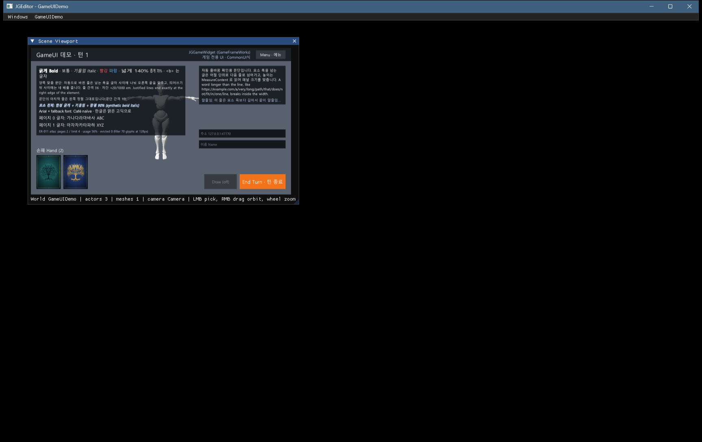
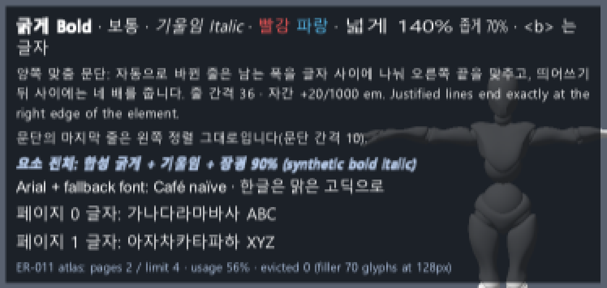

게임 UI 진행 보고 — 글 서식 · 글꼴 아틀라스
요약. 글자 요소에 문단 서식(줄 간격 · 자간 · 장평 · 문단 간격 · 요소 전체 합성 굵게/기울임)과 양쪽 맞춤을 넣었고, 글 안 마크업(<b> <i> <color=#…> <hscale=…>)으로 글의 일부만 굵게 · 기울임 · 색 · 장평을 바꿀 수 있게 했습니다. 글꼴 아틀라스는 한 장이 차면 새 페이지를 열고, 상한(기본 4장)에서는 이번 프레임에 쓰지 않은 가장 오래된 페이지를 비워 다시 씁니다. 글꼴에 없는 글자는 대체 글꼴로 그립니다.
결과. 헤드리스 셀프 테스트 243/243(요청서 완료 기준 포함), 기존 회귀 통과, 메인 트리 빌드 오류 0. 검증 게임에 서식 패널을 붙여 에디터 실제 입력 20단계를 다시 통과했고, 디버거 아래에서 실행 중 D3D12 메시지는 0건이었습니다. 두 아틀라스 페이지의 글자가 한 줄에 함께 그려지는 것도 화면에서 확인했습니다.
남은 일. 커밋(사용자), 실제 한글 IME 확인(GG-9U). 확인해 주신 GUI 3-5(imgui.ini 추적 해제 · 백업 zip 삭제)는 끝냈습니다. 구간 글꼴 바꾸기 · 글 사이 그림 · 아틀라스 부분 갱신은 보류 표에 있습니다.
243 / 243
gameui.selftest — 서식 29 · 완료 기준 4 · 아틀라스 · 대체 17 추가(전 193), 약 1초0 / 5,000
빈 글리프 — 서로 다른 한글 1,000자 × 12 · 16 · 20 · 24 · 32px → 3페이지 · 사용률 76% · 비우기 0
20 / 20
검증 게임 실제 입력 단계(메인 엔진) · 오류 로그 0 · 남은 메모리 블록 0
0
실행 중 D3D12 메시지(디버거 아래 30초) · 빌드 오류(워크트리 · 메인)
1. 화면
검증 게임 GameUIDemo HUD의 왼쪽 패널입니다. 창 안 뷰포트가 작아 화면 배율이 0.33이라 글자가 작게 래스터화되었습니다. 오른쪽 그림은 그 부분을 3배로 키운 것입니다.


2. 쓰는 법 — 글 서식 (ER-010, GG-10)
| 할 일 | 방법 |
|---|---|
| 문단 서식 | HGameUIParagraphStyle을 text->SetParagraphStyle(style). LineHeight(기준선 사이, 0 = 글꼴 기본) · LetterSpacing(1/1000 em, 글자 사이에만, 음수 가능) · HorizontalScale(1.0 = 100%) · ParagraphSpacing(줄바꿈 문자 다음 문단 앞) · bBold · bItalic(요소 전체 합성) |
| 양쪽 맞춤 | SetAlignment(EGameUIHorizontalAlign::Justify, …) + 줄바꿈(Word · Character). 자동으로 바뀐 줄만 폭에 맞추고, 문단 마지막 줄 · 말줄임 줄은 왼쪽. 남는 폭은 글자 사이에 나누되 띄어쓰기 뒤에 4배를 줍니다(띄어쓰기가 적은 한글 줄도 고르게 펴짐) |
| 구간 서식 | SetRichText(true) 뒤 글에 <b>…</b> <i>…</i> <color=#RRGGBB>…</color>(또는 #RRGGBBAA) <hscale=140>…</hscale>(퍼센트). 겹쳐 쓸 수 있습니다. 글자 그대로의 꺾쇠 · & 는 < > &. 모르는 태그 · 짝 없는 닫는 태그 · 잘못된 값은 글자 그대로 보입니다(글이 조용히 사라지지 않음). 기본은 꺼짐 |
| 합성 방식 | 굵게 = 글자마다 폭 + em/24, 커버리지를 넓힌 글리프를 따로 래스터화 · 기울임 = 기준선을 축으로 12° 비튼 사각형(폭은 그대로) · 장평 = 그 폭으로 래스터화(늘린 그림이 아니라 선명함). 굵은 · 기울임 글꼴 면은 아직 쓰지 않습니다(GG-H25) |
| 측정 | MeasureContent(width, manager)와 새 LayoutContent(width, manager, layout)(그리기와 같은 줄 · 글자 자리)가 서식을 반영합니다. 직접 배치는 PGameUIFont::LayoutText(text, HGameUITextLayoutOptions, layout). 지금까지의 7인자 LayoutText는 서식 없는 배치 그대로입니다 |
text->SetRichText(true);
text->SetText(PString("<b>굵게</b> 보통 <i>기울임</i> <color=#FF5A5A>빨강</color> <hscale=140>넓게</hscale>"));
HGameUIParagraphStyle style;
style.LineHeight = 45.0f; // 35px 본문
style.LetterSpacing = -100.0f; // -0.1 em
text->SetParagraphStyle(style);
text->SetWrap(EGameUITextWrap::Word);
text->SetAlignment(EGameUIHorizontalAlign::Justify, EGameUIVerticalAlign::Top);3. 쓰는 법 — 글꼴 아틀라스 · 대체 (ER-011, GG-11)
| 할 일 | 방법 |
|---|---|
| 기본 동작 | 바뀌었습니다. 1024² 페이지(4MB)가 차면 새 페이지를 엽니다. 상한에서는 이번 프레임에 쓰지 않은 가장 오래된 페이지를 비우고 다시 채웁니다(비운 글자는 다음에 쓸 때 다시 래스터화). 게임 코드를 바꾸지 않아도 글자가 빠지지 않습니다 |
| 상한 | font->SetAtlasPageLimit(n)(기본 4). 한 프레임에 상한보다 많이 필요하면 상한을 넘겨 열고 경고 "Font atlas needs more than N pages in one frame"을 한 번 남깁니다. 넘겨 연 페이지와 줄인 상한은 ClearGlyphs까지 남습니다 |
| 비우기 | font->ClearGlyphs() — 글리프와 페이지를 모두 비웁니다(화면을 크게 바꿀 때). 그리기 목록을 만들기 전에 부릅니다 |
| 확인 | GetAtlasPageCount() · GetAtlasStats()(페이지 수 · 상한 · 사용률 · 비운 페이지 · 상한 넘김) · GetGlyphCount() |
| 글꼴 대체 | font->SetFallbackFont(other)(사슬 가능, 돌면 거부). 이 글꼴에 없는 글자는 대체 글꼴의 폭 · 글리프로 배치하고 그립니다. 줄 높이 · 기준선은 원래 글꼴, 다른 글꼴 사이 커닝은 0. HasGlyph는 대체 사슬까지 봅니다. 글꼴을 준비할 때(그리기 전) 정합니다 |
4. 검증
| # | 내용 | 결과 |
|---|---|---|
| V1 | gameui.selftest: 줄 간격 · 기준선 · 문단 간격 · 자간 · 장평 · 합성 굵게 · 양쪽 맞춤(띄어쓰기 4배, 한글 줄 고르게) · 자간 + 말줄임 · 마크업(구간 · 겹침 · 엔티티 · 모르는 태그 그대로) · 굵은 구간 줄바꿈 · 변형 글리프 · 기울임 사각형 · 구간 색 / 페이지 · 비우기 · 이번 프레임 보존 · 상한 넘김 · ClearGlyphs · 페이지별 배치 · 대체 글꼴(측정 · 커닝 · 그리기 · 돈 사슬 거부) | 243/243 워크트리 · 메인 |
| V1 기준 | 요청서 완료 기준: (a) 35px · 줄 간격 45 · 자간 −100 · 양쪽 맞춤 → 줄 끝 = 폭, 마지막 줄 왼쪽, 높이 = 줄 수 × 45 + 문단 간격 (b) 굵은 면 없는 TTF 한 요소에서 구간만 굵게 · 굵게 + 기울임 (c) 장평 93% = 폭 93%, 자간 +40 = 0.04 em (d) 장평 140% 구간이 뒤 글자를 민다 / 한글 1,000자 × 5크기 빈칸 · 경고 없음 | 모두 통과 |
| V2 | 검증 게임(메인 엔진) 실제 입력 20단계 + 서식 · 아틀라스 패널 캡처 | 통과 오류 0 · 종료 0 · 페이지 텍스처 2장 생성 · 해제 |
| V3 | gmtest · console.selftest · net.test all · datatable.selftest, 디버거 아래 검증 게임 30초 | 통과 64 · 64 · 101 · 127, D3D12 메시지 0(종료 보고는 기준선과 같음) |
5. 알아둘 것
| 항목 | 내용 |
|---|---|
| 빌드 | 첫 빌드에서 C2280이 났습니다. PGameUIFont가 DLL 내보내기 클래스라, 막지 않으면 컴파일러가 복사 대입을 만들어 내보내려 하고, 이동만 되는 아틀라스 페이지(4MB)와 부딪힙니다. 글꼴 복사를 금지해 해결했습니다. |
| 프레임 | "이번 프레임" = 관리자가 그리기 목록을 한 번 만드는 동안(PGameUIFont::BeginFrame). 관리자는 목록을 만들자마자 그리므로 관리자가 여럿이어도 안전합니다. 헤드리스처럼 그리기 목록을 만들지 않으면 비우지 않고 상한을 넘깁니다. |
| 기울임 | 폭이 그대로라 기울인 글자가 다음 글자 쪽으로 조금 넘어갑니다. 진짜 기울임 글꼴 면은 보류(GG-H25)입니다. |
| API 변경 | GetGlyph는 값으로 돌려줍니다(글리프에 페이지 · 글꼴), GetAtlasTexture(page) · GetAtlasPixels(page), IsAtlasFull 삭제. 게임 프로젝트 코드에서 쓰는 곳이 없음을 확인했습니다. 엔진 헤더가 바뀌었으니 게임 솔루션은 다시 빌드합니다. |
| 범위 밖 | 구간 글꼴 바꾸기 · 글 사이 그림 · 로컬라이제이션(GG-H3), 바뀐 사각형만 올리는 부분 갱신 · 1채널 아틀라스(GG-H4 — Graphics 기능 필요), 굵은 · 기울임 글꼴 면(GG-H25). |
6. 할 일
- 커밋 GG-C2 — GFW
UI/11파일(새 파일 없음), 재빌드 Bin, 문서 · 캡처 · 검증 게임 소스. 목록은TODO_GameUI.md다음 할 일 3. - 확인 실제 한글 IME 입력 한 번(GG-9U).
- GUI 3-5 완료(D-19 ③, 미커밋):
.gitignore에Bin/DevelopEngine/imgui.ini+ 추적 해제(로컬 파일은 그대로), 백업 zip 2개 삭제(git 이력에 남음). 이제 실행만으로git status가 바뀌지 않고, 새 PC · 새 워크트리는 기본 창 배치로 시작합니다. - 게임 세션에는 결과와 쓰는 법을 보냈습니다(ProjectAH 요청서는 그쪽이 고칩니다).
7. 문서 위치
- 검토서
Memory/GameFrameWorks/Files/ER-010_ER-011_검토_2026-10-02.md - 검증 기록
Memory/GameFrameWorks/Files/2026-10-02_GameUI_ER010_ER011_verify.txt - TODO · 현황
Memory/GameFrameWorks/TODO_GameUI.md·Memory/GameFrameWorks/현황.md§10 - 검증 게임
Memory/GameFrameWorks/Files/tools/gameui_demo_testgame/(README 기대 결과) - 어제 보고서
GameUI_진행보고_2026-10-01.html